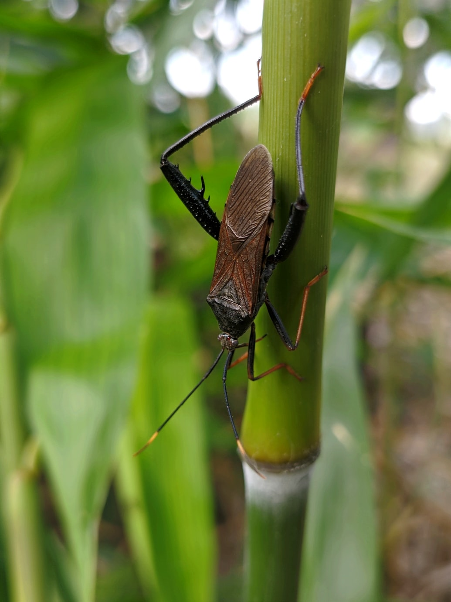

Los grillos están emparentados con las Acrididae (saltamontes). Sus patas están adaptadas
al salto, sin embargo saltan menos que los saltamontes, lo que los hace más torpes.

En cambio, corren por el suelo con rapidez. Excavan una madriguera en el suelo, que
consiste en una galería de más de medio metro, y que termina en una habitación esférica.
La entrada a su madriguera la mantienen limpia en una gran extensión, ya que la utilizan
para zona de canto y así atraer a las hembras (sólo los machos cantan). Para producir el
sonido tan peculiar de estos insectos, levantan ligeramente sus alas y las frotan una contra la
otra. La longitud de onda del canto de un grillo es similar a la distancia que hay entre los
dos oídos humanos, razón por la cual resulta difícil establecer la localización de un grillo
por su sonido. La hembra es capaz de captar este sonido gracias a que, como la mayoría de los
ortópteros, poseen órganos timpánicos. Su régimen alimenticio es omnívoro: comen tanto plantas
como insectos.